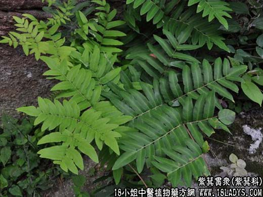

【中药概述】紫萁贯众为紫萁科植物紫萁的干燥根茎。苦，寒。 清热解毒，止血：用于防治感冒、鼻衄、头晕、痢疾、血崩漏等证，单方煎服；外伤止血，本品焙焦研细末敷患处。 【药理作用】对金黄色葡萄球菌、绿脓杆菌有较强的抑制作用。 【化学成分】含甾类化合物。 【用量用法】本品9——20g，水煎服，或入剂。外用适量。 【注】此外，还有狗脊贯众（为乌毛蕨科植物单芽狗脊和狗脊蕨带叶柄残基的根茎）；荚果蕨贯众（为球子蕨科植物荚果蕨带叶柄残基的根茎）。
本文解释权归中药大全，本文地址： https://www.daquan.com/post/1867.html